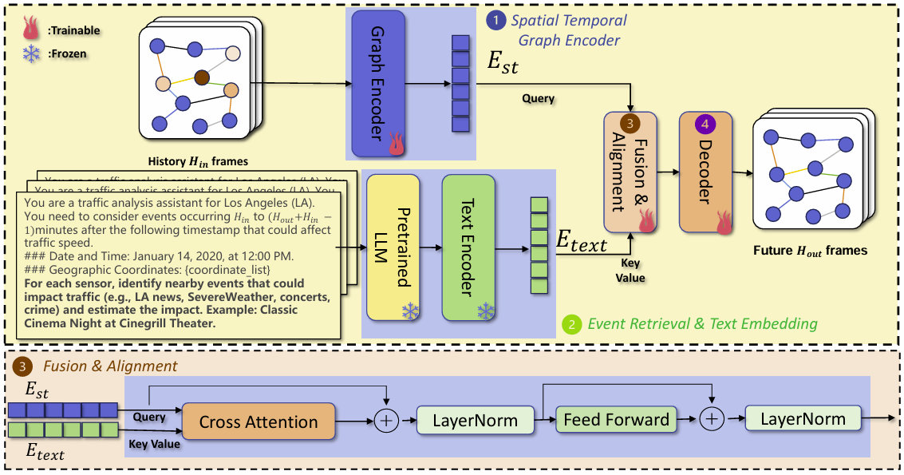
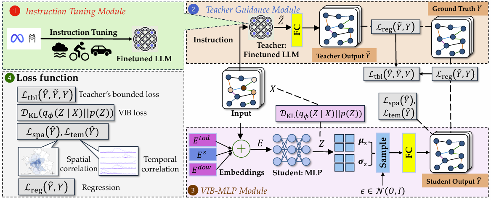
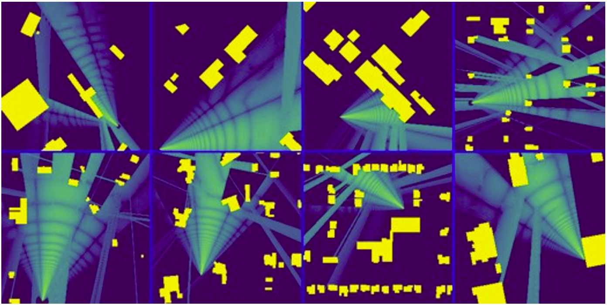
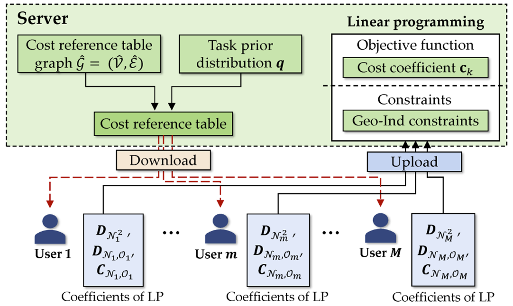
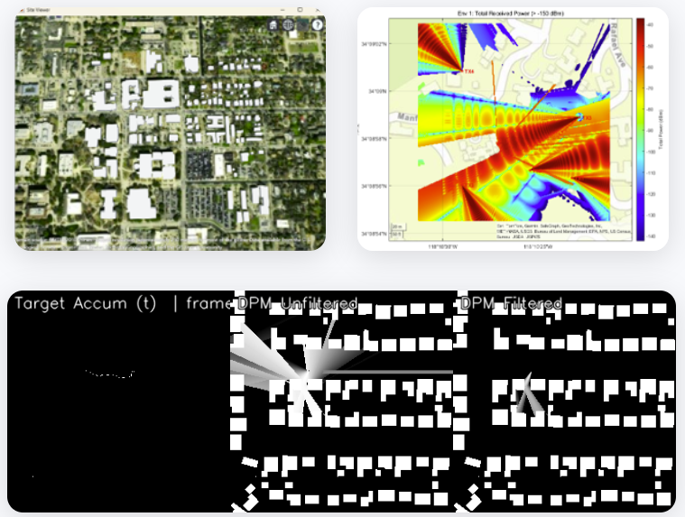

Xinpeng Xie
Ph.D. Candidate
University of North Texas
xinpengxie@my.unt.edu
About
I am a Ph.D. candidate at University of North Texas. My research focuses on privacy-preserving technologies and large language models, with particular interests in metric differential privacy, and machine learning applications.
Research Interests
- Metric Differential Privacy
- Large Language Models
- Spatial Computing
Publications
2025
-
FUSE-Traffic: Fusion of Unstructured and Structured Data for Event-aware Traffic Forecasting ACM SIGSPATIAL International Conference on Advances in Geographic Information Systems, 2025 [Paper]
-
 A Decade of Metric Differential Privacy: Advancements and Applications arXiv preprint arXiv:2502.08970, 2025 [arXiv]
A Decade of Metric Differential Privacy: Advancements and Applications arXiv preprint arXiv:2502.08970, 2025 [arXiv] -

-
EfficientLocNet: High-Performance and Lightweight Radio Source Localization with Multi-Scale Attention ACM SIGSPATIAL International Conference on Advances in Geographic Information Systems, 2025 [Paper]
-
Time-Efficient Locally Relevant Geo-Location Privacy Protection Proceedings on Privacy Enhancing Technologies (PETS), 2025 [Paper]
2024
-
 Harnessing LLMs for Cross-City OD Flow Prediction ACM SIGSPATIAL International Conference on Advances in Geographic Information Systems, 2024 [Paper]
Harnessing LLMs for Cross-City OD Flow Prediction ACM SIGSPATIAL International Conference on Advances in Geographic Information Systems, 2024 [Paper] -
 Protecting Vehicle Location Privacy with Contextually-Driven Synthetic Location Generation ACM SIGSPATIAL International Conference on Advances in Geographic Information Systems, 2024 [Paper]
Protecting Vehicle Location Privacy with Contextually-Driven Synthetic Location Generation ACM SIGSPATIAL International Conference on Advances in Geographic Information Systems, 2024 [Paper]
Projects
-
Wireless Coverage Simulator Interactive web application with multiple simulation modes for analyzing wireless signal coverage [Demo]